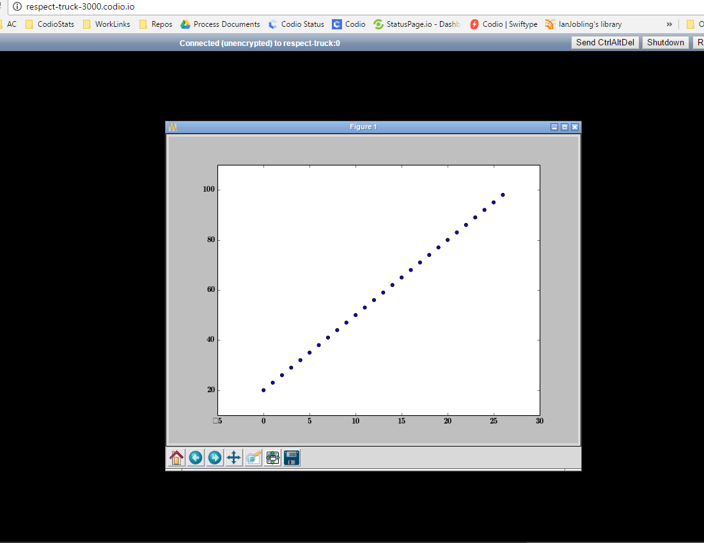

GUI Based Output¶
If you are writing or using programs that have a GUI-based output, it is important that you read this section. Whether you are using UI libraries such as tkinter and qt, or simply using Ubuntu applications that have a non-web based UI, this section explains how to set up a virtual desktop.
Sample project¶
Codio provides a Starter Pack project that contains examples of GUI Output. Go to Starter Packs and search for Demo GUI Output if not already loaded in your My Projects area. Click Use Pack and then Create to install it to your Codio account.
Uses and limitations¶
X Server is a virtual desktop that is very effective for Codio’s cloud-based infrastructure. Any application that relies on a graphical user interface has its graphical output redirected to it and Codio’s viewer is then able to display the virtual desktop in a browser.
The Demo GUI Output project provides sample applications and also includes some complex UIs (for example, SQLite and StartUML). You may experience limitations when using fast-motion graphics where the virtual screen content is changing so fast that it cannot be rendered in real time over the internet. A stronger bandwidth will provide better performance and overall experience.
Install your own projects¶
Install X Server¶
To install X Server, follow these steps:
Click the Tools tab and choose Install Software.
Find the X Server component and click the Install icon.
The installation may take a few minutes to complete. You should then Restart your box before proceeding.
Run code¶
Before you can view any output, you must first start your code so the program can run. When you start the viewer (see below), the UI output is automatically displayed.

You can also start the viewer first but it will be empty until a program is run; it will then refresh and display the output.
Use the viewer¶
The viewer is a special window that appears either inside Codio or in a separate browser tab. To open it, add “Viewer”: “https://{{domain3000}}/” to the .codio file, as follows:
{
// Configure your Run and Preview buttons here.
// Run button configuration
"commands": {
"Run Python (tkinter)": "python3 tkinterpy/demo.py",
"Run Java (Lunar Phases)": "cd swing && java LunarPhases",
"SQLite Browser App": "sqlitebrowser",
"StarUML": "staruml"
},
// Preview button configuration
"preview": {
"Viewer": "https://{{domain3000}}/"
}
}
You can also access the viewer from any browser using:
https://pagoda-cigar-3000.codio.io/
where you should replace pagoda-cigar with the box domain name. You can find the box domain name on the Box Info page in the Web: Static content section (Project > Box Info ).
Customization¶
You can customize the X Server installation by modifying the config files in the normal way using vim or nano. For example you can use:
sudo vim /etc/init/openbox.conf to open the openbox desktop config so you can change the default virtual desktop size.
sudo vim /etc/init/novnc-3000.conf to modify the port that the viewer runs on in case it conflicts with other services you may have configured on the default port 3000.